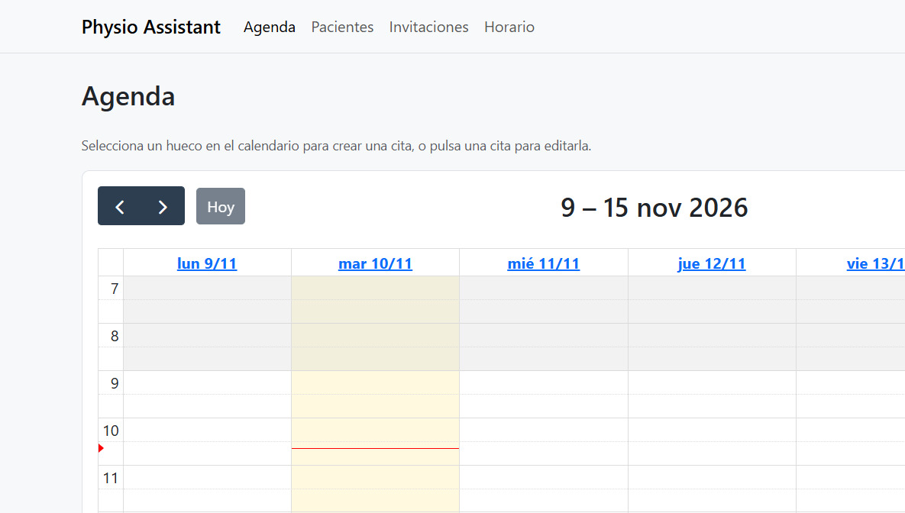

Physiotherapy Assistant
Python
Django
Aplicación web para fisioterapeutas que reúne la agenda, las fichas de pacientes con historial clínico cifrado y enlaces de invitación para que cada paciente reserve su cita online.